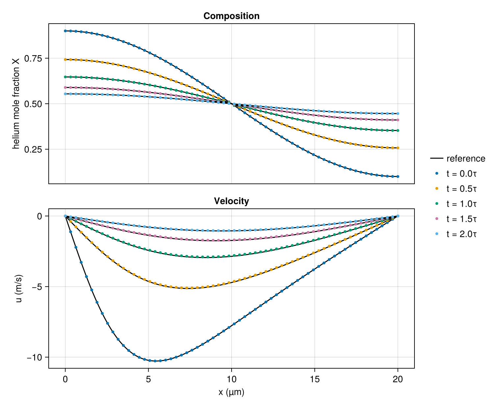

Loschmidt cell
In 1870 Josef Loschmidt measured how fast one gas diffuses into another with a vertical tube closed at both ends and divided at its middle by a sliding plate. With the heavier gas in the lower half and the lighter in the upper, he withdrew the plate, let the gases interdiffuse for a measured time, pushed the plate back and analyzed the gas in each half.
The analysis rests on the diffusion equation for the mole fraction $X$ of one gas, $\partial X/\partial t = D\,\partial^2 X/\partial x^2$, with no flux through the closed ends at $x = 0$ and $x = L$. Its solutions are sums of the modes $\cos(n\pi x/L)$, and the $n$th mode decays as $e^{-n^2 t/\tau}$ with
\[\tau = \frac{L^2}{\pi^2 D}.\]
The step from which the cell starts contains the odd modes, with amplitudes falling as $1/n$. The third mode decays nine times as fast as the first, the fifth 25 times, and from about the time $\tau$ on, the difference between the mean mole fractions of the two halves, for the gas that began in the lower half, is
\[\Delta(t) = \frac{8}{\pi^2}\, e^{-t/\tau}\]
to better than a part in $10^4$. One measurement of $\Delta$ gives $D$.
This tutorial fills a cell with helium and argon in the shape of that first mode, lets it decay, measures $D$ as Loschmidt did, from the two halves, and compares it with the tabulated coefficient given to the calculation.
using CompactLES # re-exports MPI
MPI.Initialized() || MPI.Init(threadlevel=:funneled)
using CairoMakie
using Printf
CairoMakie.activate!(type = "png")Gases
Helium and argon are both monatomic, so their heat capacities are constant and IdealMixture describes them exactly at room temperature.
neutral_binary_diffusion builds the binary diffusion coefficient of every pair of the named species from the correlations of Marrero and Mason (1972), bundled with CompactLES, which give $pD$ as a function of temperature. The paper places helium–argon in its most reliable group, with an uncertainty of 1% at 300 K. CeaTransport takes the viscosity and thermal conductivity of each species from the bundled NASA CEA fits, and with diffusion = :mixture_averaged the species diffusion from the binary coefficients. For a mixture of two gases that model reduces to Fick's law with the binary coefficient. binary_diffusivity evaluates the coefficient at a given temperature and pressure.
eos = IdealMixture(["He", "Ar"])
binary = neutral_binary_diffusion(species_names(eos))
transport = CeaTransport(eos; diffusion = :mixture_averaged, binary_diffusion = binary)
p0, T0 = 101_325.0, 300.0
D = binary_diffusivity(binary, T0, p0, 1, 2) # species 1 and 2: He and Ar
@printf("He–Ar at %.0f K and %.0f Pa: D = %.4e m²/s\n", T0, p0, D)He–Ar at 300 K and 101325 Pa: D = 7.5600e-05 m²/sCell
Diffusion across a cell takes a time that grows as the square of its length, over twenty minutes for these gases in a cell a meter long, while sound crosses the cell in a time proportional to the length, a few milliseconds. An explicit compressible solver must follow the sound, so the calculation uses a cell 20 µm long. The mean free path of the molecules at atmospheric pressure is a fraction of a micrometer, so the continuum equations still hold.
L = 20e-6
k = pi / L
tau = 1 / (D * k^2)
@printf("τ = %.3e s\n", tau)τ = 5.361e-07 sThe cell starts with the helium mole fraction $X = \tfrac{1}{2} + 0.4\cos(\pi x/L)$, rich in helium at $x = 0$. The reference is the same mode, decayed by $e^{-t/\tau}$:
X_ref(x, t) = 0.5 + 0.4 * exp(-t / tau) * cos(k * x)Diffusion velocity
At uniform pressure and temperature, an ideal-gas mixture holds the same number of molecules in every unit volume, so in a closed cell each helium atom that crosses a plane is replaced by an argon atom crossing the other way. The average velocity of the molecules is therefore zero everywhere, and the diffusion equation above then holds for $X$ at any amplitude, not only a small one.
The solver's velocity $u$ is the mass-averaged velocity, and an argon atom is ten times heavier than a helium atom, so mass flows toward the helium-rich end. With $M$ the molar masses and $\bar M = X M_\mathrm{He} + (1 - X) M_\mathrm{Ar}$ the mean molar mass,
\[u = -D\, \frac{M_\mathrm{He} - M_\mathrm{Ar}}{\bar M}\, \frac{\partial X}{\partial x}.\]
M_He, M_Ar = 4.0026e-3, 39.948e-3 # kg/mol
function u_ref(x, t)
X = X_ref(x, t)
dX_dx = -0.4k * exp(-t / tau) * sin(k * x)
return -D * (M_He - M_Ar) / (X * M_He + (1 - X) * M_Ar) * dX_dx
end
u_peak = maximum(abs(u_ref(x, 0.0)) for x in range(0, L; length = 101))
@printf("peak diffusion velocity at t = 0: %.2f m/s\n", u_peak)peak diffusion velocity at t = 0: 10.27 m/sThe velocity is negative, toward the helium-rich end at $x = 0$. It grows as $D/L$ as the cell shrinks, and in a cell of 20 µm it is several meters per second. A gas at rest would have to be accelerated to it by pressure differences, and these start sound waves across the cell. When this calculation starts from rest, pressure swings of up to 3.6% of the ambient pressure persist through the whole run, and the velocity departs from the diffusion velocity by up to 2.4 times the latter's peak. The initial state here carries the diffusion velocity instead.
problem = Problem(
name = "He–Ar Loschmidt cell",
eos = eos,
transport = transport,
domain = ((0.0, L), (0.0, 1.0), (0.0, 1.0)),
bcs = (SlipWallBC(), PeriodicBC(), PeriodicBC()),
ic = (x, y, z) -> Prim(Y = mass_fractions(eos, "He" => X_ref(x, 0),
"Ar" => 1 - X_ref(x, 0); basis = :mole),
p = p0, T_ion = T0, u = (u_ref(x, 0), 0.0, 0.0)),
)Slip walls close both ends; no gas crosses them. The grid has 64 points and the numerics are the defaults.
solver, Q = setup(problem, Numerics(n_global = (64, 1, 1)))Run
A snapshot of the mole fractions and the velocity every $\tau/2$, until $2\tau$, the first at the start, records the decay. :X holds the mole fraction of each species, helium first.
snapshots = []
record = Callback(EveryTime(tau / 2), function (solver, Q)
push!(snapshots, field_snapshot(solver, Q; fields = (:X, :u)))
nothing
end)
run!(solver, Q; tfinal = 2tau, nmax = 100_000, callback = record)
solver.step15556Decay
Dots are the calculation. The reference lines are the decayed mode above and the diffusion velocity it implies.
x = snapshots[1].coords[1]
X_He(snap) = vec(snap[:X][:, 1, 1, 1])
xs = range(0, L; length = 400)
fig = Figure(size = (760, 620))
top = Axis(fig[1, 1], ylabel = "helium mole fraction X", title = "Composition")
bottom = Axis(fig[2, 1], xlabel = "x (µm)", ylabel = "u (m/s)", title = "Velocity")
linkxaxes!(top, bottom)
hidexdecorations!(top, grid = false)
for (snap, color) in zip(snapshots, Makie.wong_colors())
label = @sprintf("t = %.1fτ", snap.t / tau)
lines!(top, 1e6 .* xs, X_ref.(xs, snap.t), color = :black,
label = snap === snapshots[1] ? "reference" : nothing)
scatter!(top, 1e6 .* x, X_He(snap); color, markersize = 6, label)
lines!(bottom, 1e6 .* xs, u_ref.(xs, snap.t), color = :black)
scatter!(bottom, 1e6 .* x, vec(snap[:u][:, 1, 1, 1]); color, markersize = 6)
end
Legend(fig[1:2, 2], top, framevisible = false)
fig
Loschmidt measured the difference $\Delta$ between the mean mole fractions of the two halves. Here the ratio of the helium difference to its initial value gives $D$ at each snapshot:
lower = x .< L / 2
halves(X) = sum(X[lower]) / count(lower) - sum(X[.!lower]) / count(.!lower)
Δ0 = halves(X_He(snapshots[1]))
for snap in snapshots[2:end]
D_measured = log(Δ0 / halves(X_He(snap))) / (k^2 * snap.t)
@printf("t = %.1fτ: D = %.5e m²/s (%+.4f%%)\n", snap.t / tau, D_measured,
100(D_measured / D - 1))
endt = 0.5τ: D = 7.56035e-05 m²/s (+0.0047%)
t = 1.0τ: D = 7.56037e-05 m²/s (+0.0050%)
t = 1.5τ: D = 7.56041e-05 m²/s (+0.0054%)
t = 2.0τ: D = 7.56044e-05 m²/s (+0.0058%)The measured coefficient agrees to 0.01% with the one given to the calculation, and at each snapshot the mole fraction lies within $3 \times 10^{-5}$ of the reference. Turning off the artificial properties and the filter, both on by default, changes the measured coefficient by less than one part in a million.
The largest difference between the velocity and the diffusion velocity, as a fraction of the latter's peak at the same time, is
for snap in snapshots[2:end]
u = vec(snap[:u][:, 1, 1, 1])
u_diffusion = u_ref.(x, snap.t)
@printf("t = %.1fτ: %.1f%%\n", snap.t / tau,
100maximum(abs, u .- u_diffusion) / maximum(abs, u_diffusion))
endt = 0.5τ: 0.8%
t = 1.0τ: 1.5%
t = 1.5τ: 1.9%
t = 2.0τ: 1.6%The difference oscillates at the period of sound crossing the cell, and in a cell twice as long it is half as large: it is weak sound, left from the start of the run.
What this checks
- A composition mode decays under binary diffusion at the rate of the diffusion equation with the tabulated coefficient, to 0.01% in the coefficient.
- Diffusion between gases of different molar mass sets the gas in motion, at the velocity implied by equal and opposite molecular fluxes.
This page was generated using Literate.jl.